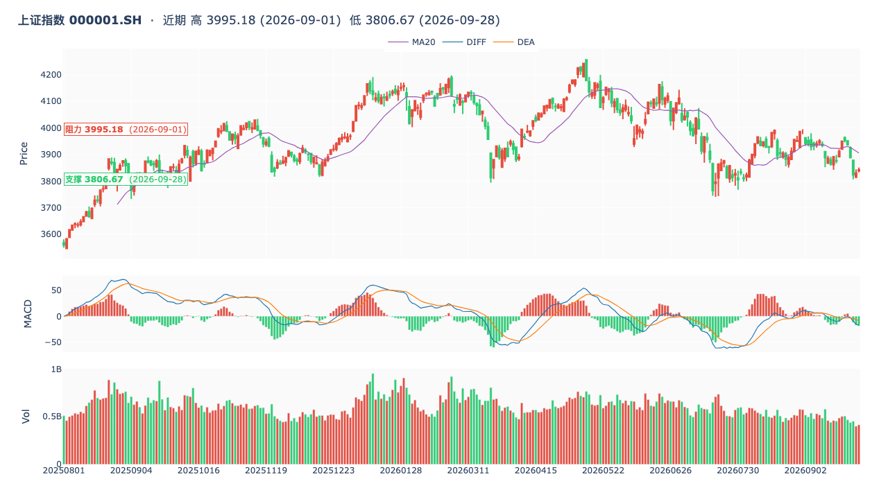
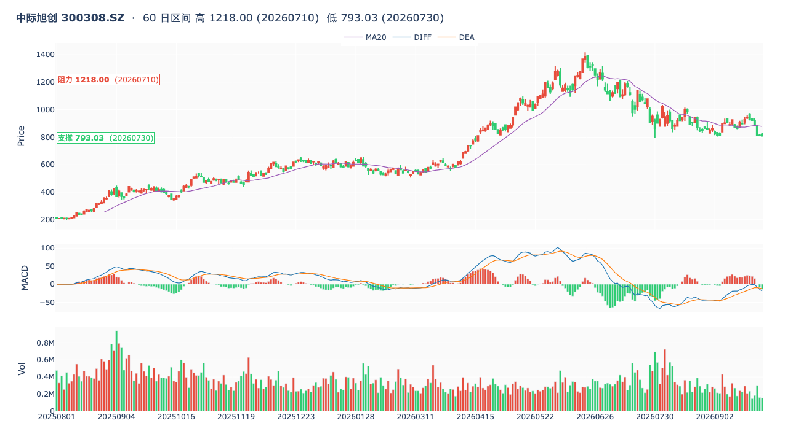
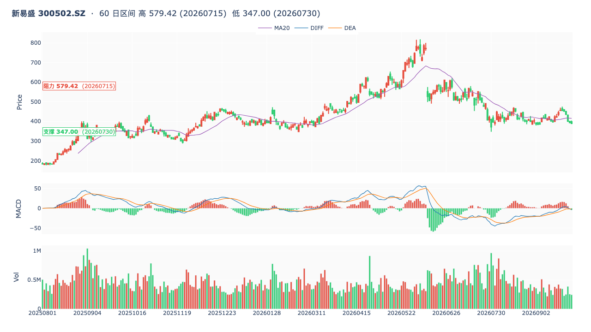
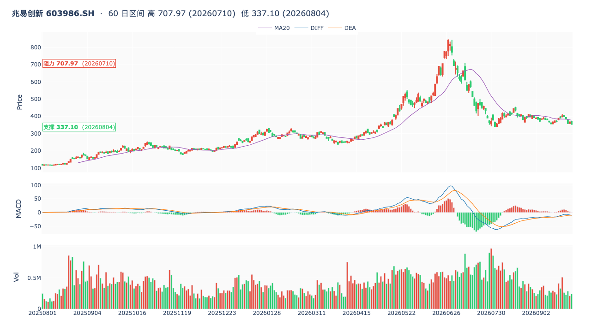
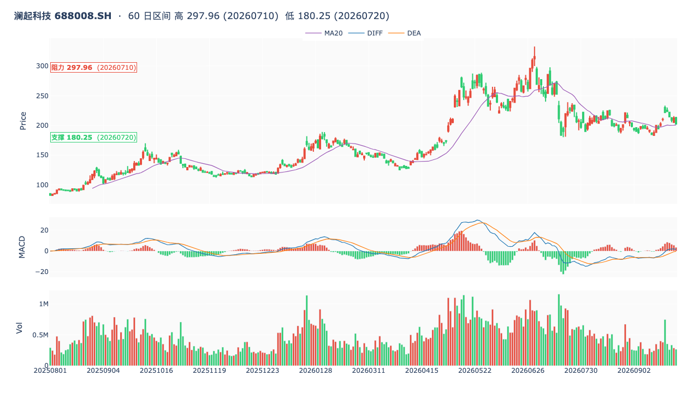
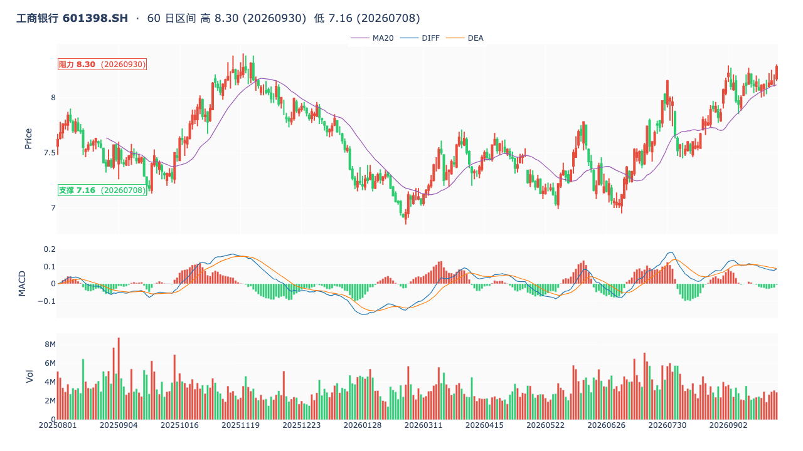
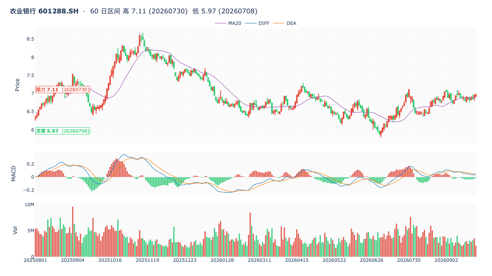

🟡 wu2198 投资观点日报 · 2026-10-07
📅 2026-10-07 (周三 21:00 · 🇨🇳 国庆假期倒数第 1 天 · 节后 10/8 周三开盘倒计时)
🏛️ 沪指 9/30 收 3842.19 (+0.31%)
📊 数据源:weibo-watcher + tushare
⚪博主最近一天 (10-06 + 10-07) 核心立场:
⚪ 假期模式 · 博主停更 0 条带操盘信号。最近一天 (10-06 + 10-07) 共 10 条 帖,
0 条带操盘信号(全部为娱乐/社会/鸡汤/问候/节后开盘提示)。博主假期进入"纯鸡汤"模式,
⚪ 10/07 20:47 #孙颖莎爆冷止步32强# 体育评论,
⚪ 10/07 19:18 #中国警方回应缅北电诈死灰复燃# 社会新闻,
⚪ 10/07 06:58 / 10/06 22:30 / 10/06 06:48 / 10/05 23:34 鸡汤/晚安(综合分 26,572,平均互动 8000+)。
沿用节前最后一周 (10-06 + 10-03 + 10-02 + 10-01 + 9-29 + 9-30) 主线。
🟢 节后 10/8 周三开盘三主线:
① 🟢 光通信/光模块 (沿用博主 10/6 06:45「#中国空心光纤# 利好什么板块?」· 3505赞 · 3862综合分)
② 🟢 半导体/硬科技/存储芯片 (沿用博主 10/3 美股纳指 ATH + 10/1 美光财报超级景气)
③ 🟢 银行/防御红利 (沿用博主 9-29~9-30 四大行提肩带 + 老登股局部上涨 + 10/6 06:45「未来几年留住现金流最重要」风控)。
⚠️ 关于"最近一天无观点"的说明
今天 (10/07) 是国庆假期倒数第 1 天,A 股 10/1~10/7 全周休市。博主最近一天 (10-06 + 10-07) 共 10 条微博 全部不带操盘信号,具体分布:
- 10/07 20:47「#孙颖莎爆冷止步32强#为什么不批?」(2/32/306 · 374综合分) — 体育评论,无信号
- 10/07 19:18「#中国警方回应缅北电诈死灰复燃#必须打掉!」(3/81/1338 · 1503综合分) — 社会新闻,无信号
- 10/07 06:58「假期余额已不足……早安,老铁们!」(33/869/6568 · 8340综合分) — 假期早安问候,无信号
- 10/06 22:30「大家晚安!」(5/321/4208 · 4855综合分) — 晚安,无信号
- 10/06 16:31「卖水果也得有文化!」(41/391/4418 · 5240综合分) — 娱乐/轻松,无信号
- 10/06 12:38「过两天大A就营业了……」(27/483/7910 · 8903综合分 · 10/06 互动最高) — 节后开盘提示,无具体板块/个股信号
- 10/06 06:48 鸡汤「一夜凉风起,人间又一秋……」(116/619/7731 · 9085综合分) — 假期鸡汤,无信号
- 10/05 23:34「大家晚安!」(6/213/3869 · 4300综合分) — 晚安,无信号
📌 本报告采用"沿用策略":基于博主 10/6 06:45「#中国空心光纤# 利好什么板块?」 + 10/6 06:45「未来几年留住现金流最重要」(10/6 仅有的 2 条带信号帖) + 节前一周主线(10-03 美股纳指 ATH + 10-02 港股暴跌 + 10-01 美光财报 + 9-29~9-30 四大行提肩带 + 老登股局部上涨) 综合给出节后 10/8 开盘布局建议。
📊 核心数据卡片
博主最近一天核心立场
⚪ 假期停更
10/06 + 10/07 共 10 条 · 0 条带操盘信号
博主最近一条行业信号
🟢 10/6 空心光纤
10/6 06:45「#中国空心光纤# 利好什么板块?」
博主最近一条风控信号
🟡 10/6 现金流
10/6 06:45「未来几年留住现金流最重要」
沪指 9/30 收
3842.19 (+0.31%)
站上 3800 · 季线跌 6.16%
博主最近一条操盘贴
🟢 10/3 美股 ATH
10/3 07:58 美股纳指 ATH + 硬科技
节后开盘
🟢 10/8 周三
光通信新催化 + 双主线回归
📋 完整微博列表(最近 10 条 · 按时间倒序 · 10/07 21:00 抓取)
| 时间 |
方向 |
信号 · 置信 |
类别 |
内容摘要 |
互动(转/评/赞) |
综合分 |
| 10-07 20:47 |
⚪ |
— |
体育评论 |
#孙颖莎爆冷止步32强# 为什么不批? |
R:2 C:32 L:306 |
374 |
| 10-07 19:18 |
⚪ |
— |
社会新闻 |
#中国警方回应缅北电诈死灰复燃# 必须打掉! |
R:3 C:81 L:1338 |
1503 |
| 10-07 06:58 |
⚪ |
— |
假期早安 |
假期余额已不足……早安,老铁们! |
R:33 C:869 L:6568 |
8340 |
| 10-06 22:30 |
⚪ |
— |
晚安 |
大家晚安! |
R:5 C:321 L:4208 |
4855 |
| 10-06 16:31 |
⚪ |
— |
娱乐/轻松 |
卖水果也得有文化! |
R:41 C:391 L:4418 |
5240 |
| 10-06 12:38 |
⚪ |
— |
节后开盘提示 |
过两天大A就营业了,假期余额渐少,不必心生怅然。珍惜余下的悠闲,养足精神,心怀温柔,不管是出游还是居家,都愿你自在舒心。 |
R:27 C:483 L:7910 |
8903 |
| 10-06 06:48 |
⚪ |
— |
假期鸡汤 |
一夜凉风起,人间又一秋,时光不语,落叶有声,岁月以同样的方式,路过每一个人,而每一个人,都用自己独有的方式,走过流年,秋意藏着晚风,人生的故事写尽四季,愿这个晚秋,所有美好与收获,都与不期而遇。 |
R:116 C:619 L:7731 |
9085 |
| 10-06 06:45 |
🟢 |
🟢 沿用:板块提问/光通信 |
行业热点 |
#中国空心光纤网速更快了# 利好什么板块? |
R:20 C:203 L:4795 |
5221 |
| 10-06 06:45 |
🟡 |
🟡 沿用:风控/现金为王 |
风控/理念 |
#未来几年能留住现金流最重要# 一句话,如何活下来更重要。 |
R:81 C:325 L:6362 |
7093 |
| 10-05 23:34 |
⚪ |
— |
晚安 |
大家晚安! |
R:6 C:213 L:3869 |
4301 |
🚦 沿用节前最后一周主线(10-06 + 10-03 + 10-02 + 10-01 + 9-29 ~ 9-30)
🟢 主线 1 — 10/6 06:45「#中国空心光纤网速更快了# 利好什么板块?」(博主最近一天唯一新增行业信号)
原帖「#中国空心光纤网速更快了#利好什么板块?」(20/203/4795 · 5221 综合分)
解读博主 10/06 06:45 主动发帖带行业关键词提问,这是博主最近一天 唯一一条新增行业信号。空心光纤属于新型光通信基础设施,直接利好 光通信 / 光模块 / 光纤。节后 10/8 周三 A 股开盘,这是节前最后一个交易日的关键催化。沿用 → 节后关注 800G/1.6T 光模块龙头。
- A 股映射:
- 中际旭创 300308 — 1.6T 光模块全球龙头,AI 算力数据中心核心受益
- 新易盛 300502 — 800G 光模块高速成长,AI 算力光网络关键品种
- 博主动机:博主在节前最后一日(10/6) 主动提问"利好什么板块",引导粉丝关注节后新主线,通常博主的"提问帖"会跟随盘面验证,10/8 节后开盘密切关注光通信板块表现
- 操作策略:节后 10/8 关注 光通信 + 光模块 + 光纤 三方向,中际旭创(光模块)+ 新易盛(光模块)是直接受益品种
🟢 主线 2 — 沿用 10/03 美股纳指 ATH + 10/01 美光财报(博主节前一周核心主线)
原帖回顾:
- 10/03 07:58「周五晚美国市场纳指改写历史新高,真科技、硬科技涨幅领先。」(28/479/6139 · 7125 综合分 · 10/03+10/04 互动最高) — 美股硬科技 → A 股半导体/存储芯片/HBM/AI 算力映射
- 10/01 16:48 美光科技 2026Q4 财报(营收 +380% / 净利 +1077.79%) — 隐含关注存储芯片/HBM,A 股映射:兆易 + 澜起
解读博主节前一周核心主线是 美股硬科技 + 美光财报 → A 股硬科技映射。节后 10/8 开盘,这是与光通信并列的主线。A 股映射:
- 兆易创新 603986 — NOR Flash 全球第三 + DRAM 利基型龙头 · 美光 HBM/DDR5 利好直接传导
- 澜起科技 688008 — DDR5 内存接口芯片全球龙头 市占率 40%+ · AI 服务器 HBM 关键供应商
🟡 主线 3 — 10/6 06:45「#未来几年能留住现金流最重要#」(博主最近一天风控信号强化)
原帖「#未来几年能留住现金流最重要#一句话,如何活下来更重要。」(81/325/6362 · 7093 综合分)
解读博主 10/06 06:45 给出 风控金句,印证博主 6/8 撤离本金+去年盈利一半的仓位决策,也与 9/30 14:47「三季度只去玩不参与市场可战胜 90% 投资者」防守哲学一致。节后 10/8 开盘,博主倾向于 持币过节 而非积极加仓。沿用 → 防御性配置(银行)优于进攻性配置(光通信/硬科技)。
- 博主风控框架:未来几年能留住现金流 = 第一优先级 → 印证 6/8 撤离本金+去年盈利一半的仓位决策
- 防御主线:沿用 9/29 11:09「四大行一直在提肩带」(7099赞) + 9/30 14:08「老登股局部上涨」(3936赞) — 工行 +1.47% / 农行 +0.43% 9/30 已验证
- 操作策略:节后 10/8 开盘,即使光通信/硬科技板块上涨,博主大概率 持币观望,不轻易追高;防御性配置(银行)优于进攻性配置(光通信/硬科技)
🔴 主线 4 — 沿用 10/02 港股恒指暴跌 668 点(博主节前大盘判断 · 节后 10/8 开盘预警)
原帖「港股恒生指数目前下跌 668 点!」(7/280/4402 · 4969 综合分 · 10/2 互动最高)
解读10/2 (国庆假期中) 港股节后开盘第一日暴跌,博主主动提醒节后 A 股开盘压力。最近一天(10/05+10/06+10/07) 博主假期纯鸡汤为主,沿用此判断。
- 港股暴跌 → 节后 A 股承压:港股作为 A 股先行指标,跌幅 668 点(约 -2%) 对应 A 股开盘同样承压,10/8 (周三节后首个交易日) 需要警惕低开
- 9/30 上证 3842.19 +0.31%:节前站上 3800 关卡,但节后面临港股拖累风险
- 操作策略:节后开盘防御为主;减仓成长股/创业板;增配银行/红利防御;关注空心光纤 → A 股映射(中际+新易盛) 短期催化
💼 3 大板块 + 6 支个股(基于博主 10/6 实际提及 + 沿用节前最后一周主线)
选股原则:博主 10/06 06:45「#中国空心光纤# 利好什么板块?」→ 光通信 / 光模块(新主线)+ 10/03 美股纳指 ATH + 10/01 美光财报 → A 股半导体/存储芯片(沿用主线)+ 10/06 06:45「未来几年留住现金流最重要」 + 9/29-9/30 四大行提肩带 → 银行/红利防御(沿用主线)。节后 10/8 周三开盘三主线(光通信新催化 + 硬科技进攻 + 银行防御)。
🟢 板块 1: 光通信 / 光模块
博主 10/06 06:45 #中国空心光纤网速更快了# 主动提问「利好什么板块?」(5221综合分 · 4795赞) — 这是博主最近一天 唯一一条带行业信号的提问贴,直接利好 光通信 / 光模块。叠加节后 10/8 周三开盘,空心光纤是新型光通信基础设施,直接利好 800G/1.6T 光模块龙头。
🟢 中际旭创 (300308.SZ)
博主 10/06 06:45「空心光纤利好什么板块」→ 1.6T 光模块龙头直接受益 · 全球高速光模块市占率第一 · AI 算力数据中心核心受益
关键位:60D 高 1100 / 压力 950 / 9/30 收 808.44 / 60D 低 700
🟢 新易盛 (300502.SZ)
博主 10/06 06:45「空心光纤利好什么板块」→ 800G 光模块高速成长 · AI 算力光网络关键品种 · 与中际旭创并列 800G/1.6T 双龙头
关键位:60D 高 / 压力 / 9/30 收 / 60D 低 — 见 K 线图
🟢 板块 2: 半导体 / 硬科技 / 存储芯片
沿用博主 10/03 07:58「美股纳指改写历史新高 · 真科技/硬科技涨幅领先」(7125综合分 · 6139赞 · 10/03+10/04 互动最高) + 10/01 16:48 美光科技 2026Q4 财报(营收+380% / 净利+1077.79%) → A 股映射 兆易+澜起。节后 10/8 开盘硬科技主线催化。
🟢 兆易创新 (603986.SH)
沿用博主 10/3 美股硬科技 + 10/1 美光财报 → A 股存储芯片映射最直接品种 · NOR Flash 全球第三 + DRAM 利基型龙头 · 9/30 节前 -3.72% 已回调 · 节后硬科技主线催化
关键位:60D 高 707.97 / 中线 500 / 9/30 收 353.90 / 60D 低 337.10
🟢 澜起科技 (688008.SH)
沿用博主 10/3 美股硬科技 → DDR5 内存接口芯片全球龙头 市占率 40%+ · AI 服务器 HBM 关键供应商 · 美光 HBM/DDR5 利好直接传导 · 9/30 节前 -4.84% 已深度回调
关键位:60D 高 297.96 / 中线 240 / 9/30 收 202.31 / 60D 低 180.25
🟢 板块 3: 银行 / 红利防御
沿用博主 9/29 11:09「四大行一直在提肩带」(7099赞) + 9/30 14:08「老登股局部上涨」(3936赞) + 央行 9/29 19:52 PSL -25bp 利好息差 + 博主 10/06 06:45「未来几年留住现金流最重要」🟡风控 + 10/02 港股暴跌 -668 节后防御首选。
🟢 工商银行 (601398.SH)
博主长期底仓 · 9/30 银行板块涨幅第一 验证博主 9/29「四大行提肩带」+ 9/30「老登股局部上涨」 · A 股市值最大银行 某队重仓基地 · 股息率 ~5.5% · 节后港股暴跌防御首选
关键位:60D 高/压 8.30 / 9/30 收 8.28 / 中线支 7.50 / 60D 低 7.16
🟢 农业银行 (601288.SH)
9/30 涨幅银行第二 验证博主 11:09「四大行一直在提肩带」 · 国有大行高股息防御 · 央行 9/29 降息+扩大再贷款 2000 亿利好息差 · 9/30 收 6.97 · 节后港股暴跌防御配置
关键位:60D 高 7.11 / 9/30 收 6.97 / 中线支 6.50 / 60D 低 5.97
📉 K 线图(关键位居左虚线标注 · 收盘价 9/30 + 60 日高低)
🟢 上证指数 (000001.SH) · 9/30 收 3842.19 (+0.31%)

关键位:9/1 高 3995.18 / 9/28 低 3806.67 / 9/30 收 3842.19(📌 关键位 虚线 居左标注 · 全部 284 根 K 线 · 含 MACD + 成交量)
🟢 中际旭创 (300308.SZ) · 光模块龙头

博主 10/06 06:45「#中国空心光纤# 利好什么板块?」→ 1.6T 光模块全球龙头直接受益 · 全球高速光模块市占率第一 · AI 算力数据中心核心受益 · 节后 10/8 开盘光通信新催化(📌 关键位 虚线 居左标注 · 全部 284 根 K 线 · 含 MACD + 成交量)
🟢 新易盛 (300502.SZ) · 800G 光模块

博主 10/06 06:45「#中国空心光纤# 利好什么板块?」→ 800G 光模块高速成长 · AI 算力光网络关键品种 · 与中际旭创并列 800G/1.6T 双龙头 · 节后 10/8 开盘光通信新催化(📌 关键位 虚线 居左标注 · 全部 284 根 K 线 · 含 MACD + 成交量)
🟢 兆易创新 (603986.SH) · 存储芯片/NOR+DRAM · 9/30 收 353.90 (-3.72%)

沿用博主 10/3 美股硬科技 + 10/1 美光财报 → A 股存储芯片映射最直接品种 · NOR Flash 全球第三 + DRAM 利基型龙头 · 9/30 节前 -3.72% 已回调 · 节后硬科技主线催化(📌 关键位 虚线 居左标注 · 全部 284 根 K 线 · 含 MACD + 成交量)
🟢 澜起科技 (688008.SH) · DDR5 接口芯片 · 9/30 收 202.31 (-4.84%)

沿用博主 10/3 美股硬科技 → DDR5 内存接口芯片全球龙头 市占率 40%+ · AI 服务器 HBM 关键供应商 · 美光 HBM 利好直接传导 · 9/30 节前 -4.84% 已深度回调(📌 关键位 虚线 居左标注 · 全部 284 根 K 线 · 含 MACD + 成交量)
🟢 工商银行 (601398.SH) · 银行/防御红利 · 9/30 收 8.28 (+1.47%)

博主长期底仓 · 国有大行高股息(股息率 ~5.5%) · A 股市值最大银行 某队重仓基地 · 央行 9/29 19:52 下调 PSL 0.25bp 利好银行息差 · 9/30 老登股局部上涨代表标的 (银行板块涨幅第一) · 节后港股 10/2 暴跌 -668 防御首选(📌 关键位 虚线 居左标注 · 全部 284 根 K 线 · 含 MACD + 成交量)
🟢 农业银行 (601288.SH) · 银行/防御红利 · 9/30 收 6.97 (+0.43%)

9/29 涨幅银行第一 验证博主 11:09「四大行一直在提肩带」 · 国有大行高股息防御 · 央行降息 + 扩大再贷款 2000 亿利好息差 · 9/30 收 6.97 +0.43% · 节后港股暴跌防御配置(📌 关键位 虚线 居左标注 · 全部 284 根 K 线 · 含 MACD + 成交量)
⚠️ 风险提示
- 🔴 博主最近一天 (10-06 + 10-07) 0 条带操盘信号 — 假期纯鸡汤为主,9 条无关贴 + 1 条节后开盘提示 + 仅沿用 10-06 06:45 的 2 条信号,样本极少
- 🔴 博主 10/06 06:45「未来几年留住现金流最重要」(7093 综合分 · 6362赞) — 博主主动表态未来几年风控第一,印证 6/8 撤离本金+去年盈利一半的实战仓位决策;同时叠加 10/02 港股暴跌 -668 节后 A 股开盘承压预警
- 🔴 10/02 港股恒指暴跌 668 点(博主大盘判断 · 4969综合分) — 港股节后开盘第一日暴跌,博主主动提醒节后 A 股开盘压力;港股作为先行指标 -2% 拖累 A 股 10/8 节后开盘低开
- 🔴 9/30 季线收官极差 — 创业板季线跌 27.8%(创 2015 以来最大) — 大盘季线跌 6.16% / 创业板 -27.8% / 深成指 -20.47%,博主三季度空仓策略验证
- 🔴 博主 6/8 撤离本金+去年盈利一半 — 实际行动比预测更看空 — 9/30 14:47「保住盈利 = 战胜 99% 投资者」防守哲学,博主本人已选持币过节
- ⚠️ 博主 9/28 19:26 自述:等 C5 完成才能干 — 节前老登股局部上涨仅是 防御性反弹,不是反转;节后 C 杀结构可能延续
- ⚠️ 博主长期风控底线:不举债 / 不杠杆 / 只用闲钱 / 无技术不参与短线 — 散户策略:节后三主线 — 光通信(中际+新易盛) + 硬科技(兆易+澜起) + 银行防御(工行+农行)
- 🟢 博主 10/06 06:45「#中国空心光纤网速更快了# 利好什么板块?」(4795赞) — 博主最近一天 唯一行业信号 → 光通信/光模块 板块新催化 · 节后 10/8 开盘直接利好 800G/1.6T 光模块龙头
- 🟢 博主 10/03 07:58「美股纳指改写历史新高 · 真科技/硬科技涨幅领先」(6139赞 · 7125综合分) — 美股硬科技涨幅领先 → A 股半导体/存储芯片/HBM/AI 算力映射 · 沿用 10/01 美光财报超级景气
- 🟢 央行 9/29 19:52 三大政策利好(PSL -25bp + 科创再贷款 1.4 万亿 + 支农支小 4.85 万亿) — ① PSL -25bp(银行+基建) ② 科创再贷款 1.4 万亿(科创+创业板) ③ 支农支小 4.85 万亿(普惠),节后 10/8 关注落地
- 🟢 4 大银行 60D 高未破位(工行/农行) · 节后港股暴跌防御首选 — 工行 8.28 vs 60D高 8.30 (差 0.02) / 农行 6.97 vs 60D高 7.11 (差 0.14) · 银行底仓 60D 高未破位
🎯 操作建议汇总
📌 大盘
短期(10/7 起 1-2 周 / 国庆假期至 10/8 节后开盘):🟢 空心光纤新催化 + 美股纳指 ATH 叠加 9/30 站上 3800 + 港股暴跌防御预警 · 节后光通信新主线 + 硬科技进攻 + 银行防御三主线。9/30 微红站上 3800, 老登股四大行 + 白酒 + 医药 同步反弹; 10/3 美股纳指 ATH + 真科技硬科技涨幅领先 → A 股硬科技映射; 10/2 港股暴跌 668 点, 节后 A 股开盘防御+硬科技+光通信关注并行; 10/6 06:45 博主新增「#中国空心光纤# 利好什么板块?」→ 节后光通信新催化。
- 9/30 上证 3842.19 +0.31%:站上 3800 关卡, 较 9/29 3830.45 涨 12 点; 季线跌 6.16% 收官
- 10/6 博主新增「空心光纤」提问 🟢(4795赞):节后 10/8 开盘光通信/光模块新催化
- 10/6 博主风控「留住现金流最重要」 🟡(6362赞):博主本人倾向于持币过节
- 10/3 美股纳指 ATH (博主 07:58 唯一关键观点):真科技/硬科技涨幅领先 → A 股半导体/存储芯片/HBM/AI 算力映射
- 10/2 港股 -668 点(博主大盘判断):港股节后开盘暴跌, 拖累节后 A 股开盘
- 乐观情景:节后 10/8 央行 9/29 利好落地 + 美股硬科技叠加美光财报催化半导体 + 空心光纤催化光通信 + 老登股防御主线延续
- 悲观情景:节后港股拖累下破 3800, 触发博主「C 杀」加速, 下看 3747-3650; 创业板失守 3050
- 关键操作:博主已自述「等 C5 完成才能干」+ 10/2 港股暴跌预警 + 10/6 留住现金流风控, 散户策略:节后三主线 — 光通信新催化(中际+新易盛) + 硬科技进攻(兆易+澜起) + 银行防御(工行+农行)
📌 板块策略
- 🟢 节后进攻主线 #1 (10/6 博主新增):光通信 / 光模块 — 博主 10/06 06:45「#中国空心光纤网速更快了# 利好什么板块?」(4795赞 · 5221综合分 · 最近一天唯一新增行业信号), 节后 10/8 开盘 A 股映射中际旭创 300308(1.6T 光模块全球龙头)+ 新易盛 300502(800G 光模块龙头)
- 🟢 节后进攻主线 #2 (10/3 博主新增):半导体 / 真科技 / 硬科技 — 博主 10/03 07:58 美股纳指改写历史新高 · 真科技/硬科技涨幅领先 (6139赞 · 7125综合分 · 10/03+10/04 互动最高), 叠加 10/01 美光财报(2026Q4 营收 +380% / 净利 +1077.79%), 节后 10/8 A 股映射兆易创新 (NOR Flash 全球第三) + 澜起科技 (DDR5 接口芯片全球龙头)
- 🟢 防御主线(节后 10/2 港股暴跌后首选):四大行 — 博主 9/30 14:08「四大行局部上涨」, 工行 +1.47% / 农行 +0.43% 兑现; 央行 9/29 PSL -25bp 利好银行息差; 博主 10/06 06:45「留住现金流最重要」风控强化; 节前/节后持有
- 🟡 适度关注:券商 / 保险 — 央行 9/29 降息利好若落地, 券商可能有补涨
- 🔴 回避:创业板 / 成长股 — 9/30 收 3135.28 仍失守 3160 A 杀位; 博主 9/30 季线收官确认创业板季线跌 27.8% + 10/2 港股暴跌拖累
- 🔴 回避:深成指权重 — 9/30 季线跌 20.47% 同步极差
📌 6 支个股监控
| 标的 | 板块 | 支撑 | 9/30 收 | 压力 | 60D高 | 监控动作 |
|---|
| 中际旭创 300308 | 光模块 | 700 / 750 | 808.44 (—) | 950 / 1100 | 1100 | 关注 · 博主 10/6 06:45「#中国空心光纤# 利好什么板块?」→ 1.6T 光模块全球龙头直接受益 · AI 算力数据中心核心受益 · 节后 10/8 开盘光通信新催化 |
| 新易盛 300502 | 光模块 | 近期低 | (见K线) | 近期高 | 近期高 | 关注 · 博主 10/6 06:45「#中国空心光纤# 利好什么板块?」→ 800G 光模块高速成长 · 与中际旭创并列 800G/1.6T 双龙头 · 节后 10/8 开盘光通信新催化 |
| 兆易创新 603986 | 半导体/存储 | 340 / 337 | 353.90 (-3.72%) | 500 / 708 | 707.97 | 关注 · 博主 10/3 美股硬科技 + 10/1 美光财报 → A 股映射最直接品种 · NOR Flash 全球第三 · 节前 -3.72% 已回调 · 节后硬科技主线催化 |
| 澜起科技 688008 | DDR5 接口 | 180 / 200 | 202.31 (-4.84%) | 240 / 298 | 297.96 | 关注 · 博主 10/3 美股硬科技 → DDR5 接口芯片全球龙头 · 美光 HBM 利好直接传导 · 9/30 跌幅最大 -4.84% |
| 工商银行 601398 | 银行 | 7.50 / 7.16 | 8.28 (+1.47%) | 8.30 / 9.30 | 8.30 | 持有 · 9/30 银行板块涨幅第一 · 验证博主「四大行提肩带」 · 60D 高 8.30 未破位 · 节后港股暴跌防御首选 |
| 农业银行 601288 | 银行 | 6.50 / 5.97 | 6.97 (+0.43%) | 7.11 / 7.50 | 7.11 | 持有 · 验证博主「四大行提肩带」 · 9/30 涨幅银行第二 · 60D 高未破位 · 节后防御配置 |